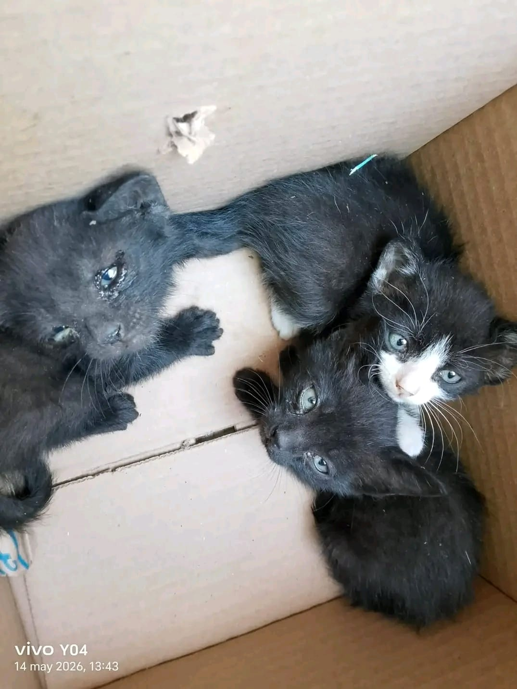
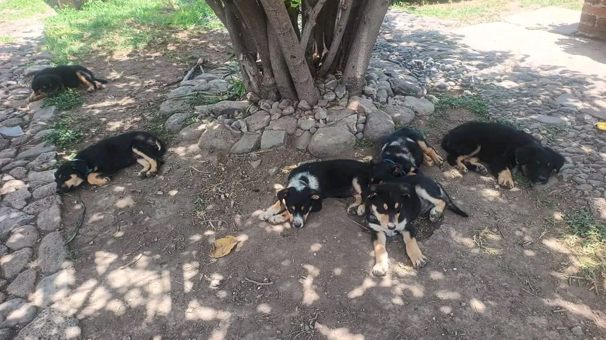

Lograr que un mayor número de perros y gatos encuentren familias comprometidas con su cuidado, protección y bienestar durante toda su vida.
Fomentar una cultura de respeto, empatía y responsabilidad hacia los animales mediante la educación y la participación ciudadana.
Fortalecer la cooperación entre ciudadanos, refugios, médicos veterinarios y organizaciones para ampliar el impacto del proyecto.
Consolidar una iniciativa capaz de mantenerse y crecer con el apoyo de la comunidad y el uso de herramientas tecnológicas.
Disminuir la cantidad de perros y gatos en situación de calle mediante acciones preventivas y campañas de adopción.
Incrementar el número de animales que encuentran un hogar responsable y permanente.
Promover campañas periódicas que contribuyan al control ético de la población animal.
Informar a la comunidad sobre la importancia de la tenencia responsable y el bienestar animal.

Visualizamos una comunidad donde el abandono animal sea cada vez menor gracias al compromiso ciudadano, la educación y la colaboración entre personas y organizaciones. Aspiramos a que la adopción responsable sea la primera opción para quienes desean integrar un nuevo compañero a su familia.
Imaginamos un entorno donde los animales sean tratados con respeto, reciban atención oportuna y cuenten con mayores oportunidades de vivir en un hogar seguro, fortaleciendo así una cultura basada en la empatía, la responsabilidad y el bienestar animal.
"Nuestro mayor logro será el día en que cada perro y cada gato tenga un hogar donde reciba amor, protección y los cuidados que merece."
Cada campaña, cada adopción y cada persona que decide involucrarse representa un paso más hacia una comunidad comprometida con el bienestar animal y con un futuro donde el abandono deje de ser una realidad.
